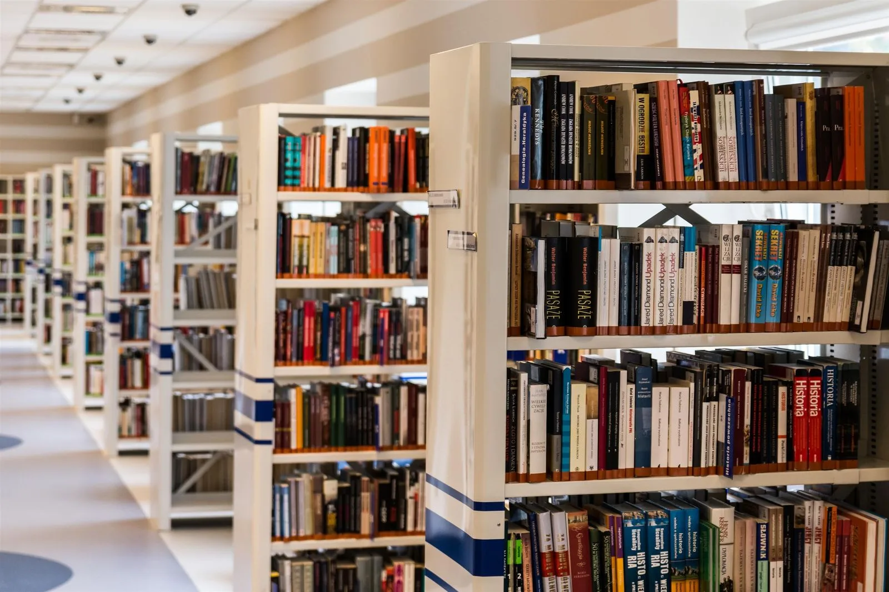

Une école à hauteur d’enfant
Le monde
commence par
une question.
Lire, essayer, créer, recommencer. À Nkamba, chaque journée donne une nouvelle raison d’apprendre.
Découvrir notre écoleICI, LA CURIOSITÉ
A TOUTE SA PLACE.
A TOUTE SA PLACE.

Découvrir ↗
02PrimaireComprendre ↗
03SecondairePrendre son envol ↗
Au-delà du cahier
Des livres.
Des idées.
Des découvertes.
Les apprentissages prennent vie dans la lecture, les projets collectifs et les échanges. Le plaisir de comprendre se construit aussi en dehors de la classe.
Faisons les premiers pas ensemble.
Comment découvrir l’école ?
Choisissez une date dans le formulaire pour essayer le parcours de visite. Il s’agit d’une simulation locale.
Quel cycle pour mon enfant ?
Le choix du cycle se prépare avec la famille, en tenant compte de l’âge et du parcours scolaire.
Faisons connaissance
Venez faire connaissance.
Essayez ce parcours avec des informations fictives. La demande reste dans votre navigateur ; aucun message n’est envoyé.